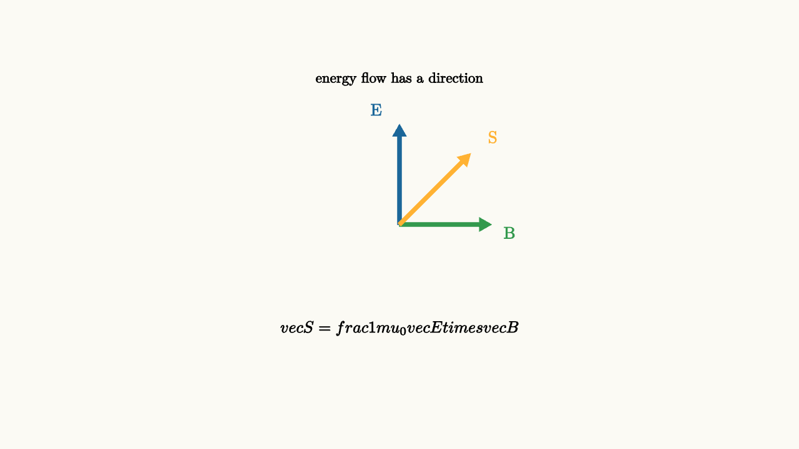

Energy Flows Through Fields
A battery lights a bulb. It is tempting to picture energy as something carried inside the wire by the moving charges. The charges do participate, and current matters, yet the sharper field picture is more surprising: electromagnetic energy flows through the space around the circuit.
The direction and rate of energy flow are described by the Poynting vector:
Its direction is perpendicular to both the electric and magnetic fields. Its magnitude gives power per unit area. In an electromagnetic wave, $\vec E$ and $\vec B$ are perpendicular, so $\vec S$ points in the direction the wave travels.

source
background = [0.985, 0.98, 0.955, 1]
camera = Camera(4.8b)
mesh triad = block {
. color{BLUE} Arrow(start: [0, 0, 0], end: [0, 1.2, 0])
. color{GREEN} Arrow(start: [0, 0, 0], end: [1.1, 0, 0])
. color{ORANGE} Arrow(start: [0, 0, 0], end: [0.85, 0.85, 0])
. center{[-0.28, 1.38, 0]} color{BLUE} Text("E", 0.72)
. center{[1.32, -0.1, 0]} color{GREEN} Text("B", 0.72)
. center{[1.12, 1.05, 0]} color{ORANGE} Text("S", 0.72)
. center{[0, -1.25, 0]} Tex("\\vec S = \\frac{1}{\\mu_0}\\vec E\\times\\vec B", 0.7)
. center{[0, 1.75, 0]} Text("energy flow has a direction", 0.62)
}
"poynting vector"
play Fade(0.7)In a simple battery-resistor circuit, electric fields guide charge through the wire. The current creates magnetic fields curling around the wire. The cross product of these fields points through the space near the wires and into the resistor. Energy enters the resistor from the surrounding field and becomes heat.
This story sounds exotic because intro circuit diagrams leave out the surrounding space. A schematic focuses on relationships among components, which is exactly what it should do. The field story adds the physical mechanism underneath the schematic.
Conservation with fields included
Energy conservation in electromagnetism is expressed by Poynting's theorem. In words, it says:
The decrease of electromagnetic field energy inside a region equals the energy flowing out through the boundary plus the work done on charges inside the region.
One common differential form is
where
is the electromagnetic energy density. The term $\vec J\cdot\vec E$ is power delivered to matter per unit volume. If current flows along the electric field, fields do work on charges.
This is the same accounting behind resistor heating. Fields lose organized energy, charges scatter in matter, and thermal energy rises.
Waves carry energy cleanly
Electromagnetic waves make the Poynting vector easiest to see. A radio transmitter drives charges back and forth in an antenna. Those accelerating charges create changing fields. The fields detach from the antenna and travel outward as a wave. Far away, a receiving antenna responds because the wave's electric field pushes charges in it.
The energy did not need a material wire to cross the gap. It crossed through fields.
source
param spread = 0.35
background = [0.985, 0.98, 0.955, 1]
camera = Camera(5.0b)
let Flow = |spread| block {
. fill{alpha{0.18} RED} stroke{RED, 3} center{[-2.25, 0, 0]} Rect([0.42, 1.55])
. center{[-2.25, -1.1, 0]} Text("source", 0.62)
. stroke{BLUE, 2} center{[-2.25, 0, 0]} Circle(0.55 + 0.35 * spread)
. stroke{BLUE, 2} center{[-2.25, 0, 0]} Circle(0.95 + 0.45 * spread)
. stroke{BLUE, 2} center{[-2.25, 0, 0]} Circle(1.35 + 0.55 * spread)
. color{ORANGE} Arrow(start: [-1.25, 0.65, 0], end: [-0.15 + spread, 0.65, 0])
. color{ORANGE} Arrow(start: [-1.25, 0.0, 0], end: [-0.15 + spread, 0.0, 0])
. color{ORANGE} Arrow(start: [-1.25, -0.65, 0], end: [-0.15 + spread, -0.65, 0])
. fill{alpha{0.15} GREEN} stroke{GREEN, 3} center{[2.4, 0, 0]} Rect([0.3, 1.35])
. center{[2.4, -1.1, 0]} Text("receiver", 0.62)
. center{[0, 1.65, 0]} Text("field energy spreads outward", 0.62)
}
"near the source"
mesh scene = Flow(spread: $spread)
play Fade(0.6)
"outward flow"
spread = 1.35
scene = Flow(spread: $spread)
play Lerp(1.4)The rings are a cartoon of wavefronts, and the arrows mark outward energy flow. In real three-dimensional space, the wave spreads over growing spheres, so intensity falls with distance when energy is not focused.
Circuits through the field lens
The field view supports circuit analysis by explaining why it works. A battery establishes surface-charge patterns on wires. Those surface charges shape electric fields inside and around conductors. The fields drive current through components. Magnetic fields appear around currents. Energy flow follows $\vec E\times\vec B$ into the places where energy is converted or stored.
This also clarifies why changing circuits can radiate. If currents and charges change rapidly, the field pattern cannot adjust everywhere instantly. Some energy leaves as electromagnetic radiation. At low frequencies and small sizes, circuit theory is an excellent approximation. At high frequencies, wire length, geometry, and wave propagation become part of the design.
The lesson to keep
Electromagnetic energy has a local flow. The Poynting vector points that flow and measures its intensity. In waves, this gives the direction light and radio energy travel. In circuits, it explains how energy reaches components through the fields around them.
The final picture of electricity and magnetism is geometric and dynamic. Charges and currents shape fields. Fields push charges. Changing fields create each other. Energy moves through the field arrangement that ties the whole system together.